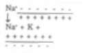
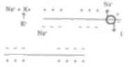
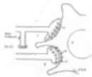

Health Promotion & Healing In Yoga. Part 4
Description
This section is from the book "Holistic Medicine", by Shriniwas J. Kashalikar.
Health Promotion & Healing In Yoga. Part 4
(4) Aparigraha
This means Non hoarding.
The concept o f Apangraha m ustb e conceived as overcom mg obsession and/ or attachment towards possessions This concept is born out of knowledge of and practice of satya. ahimsa, and asteya.
Meaningless pursuit of petty objectives leads one to perpetually ignore one's true self and vice versa.
This makes person cling to petty desires and ambitions to such an extent that even if he gets psychosomatic diseases, he cannot get rid of them.
Apangraha even if arbitrarily practiced opens up the channels by removing obstacles of petty identity and pursuits, between individual self and the cosmic consciousness The nature of this effect is not clear But the obsession for possession and attachment in hoarding i.e. tnshna' and aasakh' are (trans) physico-chemical activities resulting from the bioelectric currents in the nerves, (Fig 1) synthesis and release of neurotransmitters and combination of these with specific receptor (Fig. 2) Crick's (Noble prizewinner) ideas of molecular psychology come close to this concept (Crick, Times of India, December S. 19911.
Fig. la. Resting Nerve cell with negativity inside, and posibvity outside.
Fig. lb. Reversal of polarity (depolarization) on stimulation, due to sudden increase m permeability of membrane to Na* influx of Na+.
Fig. lc. Depolarization is followed by flux of local currents depolarizing the adjacent areas.
Fig. 1d. Repolarization is return to original polarity Fig 2 Synapse: Schematic Representation.
E & I [Excitatory fit Inhibitory] axon terminals, R -Receptors on the membrane of the post synaptic cells, N — Nucleus, PSN -Post Synaptic Neuron, Pre SI -fte Synaptic Inhibition, V -Synaptic vesicles containing inhibitory and excitatory neurotransmitter.
"Apangraha" establishes an objective, concrete and healthy communication between internal' and external' world and is associated with subjective feeling of strength and bliss.
Biahmacbarya
Brahmacharya is defined as celibacy by many. The other meaning of it is process of learning D HARM A The deeper meaning of this term is existence of the individual in ever rising state of consciousness.
It is interesting to note that the original sib? of KUNDAliNI is said to be at SWADHISHTHAN chakra which is located halfway between the navel and the sex organs i.e about 9 inches from the seam of the perineum in adults. This site roughly corresponds to the site of germinal epithelium from which the gonads develop at around 8 week of intrauterine life IUL (Gray's Anatomy, 37th Edition, P 89) 72000 nadis are said to arise from MULADHARA chakra This is the final site of quiescent' KUNDALINI.
This according to author is: a) Kundalim represents vital and primal life force' which is responsible for the most potent instinct to live and procreate and also to merge with the supreme reality b) Nadis are not nerves. Nerves and spinal cord etc are vehicles of nadis which are fountains of transphysical force' c) The awakening of and union of kundalim with Shiva represents conscious evolutionary transformation of soul which is materialized into life force and which is associated with and responsible for the zygote, organogenesis, germinal epithelium, gonads and germ cells formed therein. The transformation and union of kundalim thus represents return of the soul into its original state.
This view, though intuitive corroborates 111 with the modem scientific concepts on the one hand and the Indian philosophical concepts such as REBIRTH on the other. It is notable that the concepts of others in this regard do not encompass the transphysical nature of soul, kundalim or consciousness.
The brahmacharya maybe manifested as a poised gentle grihastha or as a total celibate.
The mechanism of the effects involves unfolding of frozen' soul kundalim into its original more than three' dimensional existence This then alters the acuity of and capacity of perception of the individual Besides, this is associated with all the consequent changes (physiological) essential for body.
The social effects of YAMA are unity of hearts, integration of souls and harmony of thoughts. Since this integrity is very real, concrete and intrinsic its effects in terms of social welfare follow in a natural fashion and m all die fields of life.
Niyama
Ashtangayoga prescribes five aspects of Niyama viz , shaucha (purity) I santosha (contentment) tapa (penance), swadhyaya (Self study), Ishwara- pranidhana.
Shaucha
Shaucha is transformation of individual consciousness into objective and selfless consciousness where cosmic consciousness flows' through the individual.
Shaucha constitutes smooth and uninterrupted cascade of neural and neurohumoral events as 111 as appropriate events such as secretions of exocrine glands and muscular activity and metabolic activity It is associated with metabolic excretory products Shaucha of psyche is achieved by observance of yama and that of body by care of personal hygiene and kriyas More extensive shaucha is achieved by care of environment.
Mechanisms underlying shaucha probably constitute the same processes as in case of yama.
Santosha
This means contentment.
It is essential to appreciate that arbitrary prescription of contentment has no meaning and can in fact turn an individual fatalistic The deeper meaning of contentment or santosha has therefore to be realized. Santosha is a result of successful effort to prevent entropy of psychic energy', stasis of mind and meanness resulting there from Santosha is a result of one's own subjective perceptions and transient nature of the phenomena all over.
The mechanisms underlying the effect of santosha also are probably the same as for the yama Tapa:
Tapa means penance.
The true meaning of tapa however involves not merely arbitrary restraint but cognitive and cognizant ascent of one's senses It is transformation of one's senses. It is altered outlook and altered taste of the individual It is refined taste and refined choice of an individual.
The effects and the underlying mechanisms are similar to those described for the santosha, but complementary.
Swadhyaya
Swadhyaya means Self study.
The Self here is not the same as interrupted by many It is not the same as the personality .Therefore it is not study of one's inclination's aptitudes, likes, dislikes etc. Swadhyaya means study of one's true nature, one's true and transphysical existence. This study involves systematic negation of one's lower or petty identities resulting from lower levels of consciousness.
The effects of swadhyaya are mainly atbtudinal and intellectual and therefore mainly neural in nature They are complementary to the effects of yama and other aspects of Niyama The physical and chemical substrates for the effects need further study and scientific evaluation.
Ishnara Pranidhana
The popular meaning of this is devotion to God Real meaning is submission to the cosmic wisdom by negating one's petty identity. It is necessary however to understand that tons involves trans intellectual thinking and not nonintellectual non thinking. It is necessary to practice Ishwara Pranidhana in this spirit and not to embrace indolence. It is important to understand the concept of relative reality and negate crude inaction.
The effects of this are probably similar to and complementary to those of yama and other Niyama.
Yam a and Niyama thus should not be interpreted as commandments for asceticism Unfortunately this has happened in the past The fountains of life in and around us must be tapped Man's supremacy lies in the fact that he can recognize his existence being in continuity with the supreme.
Continue to: